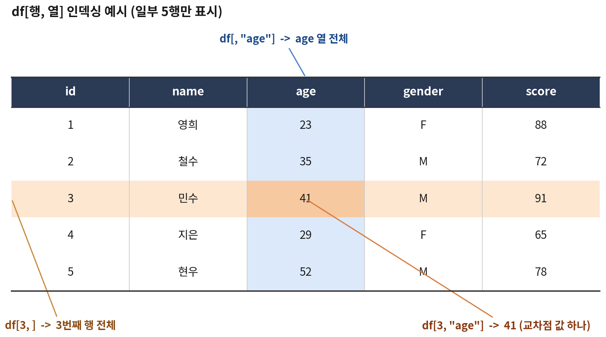

주요 함수, 인덱싱과 슬라이싱
df[행, 열]| 객체 | 행 수 | 내용 |
|---|---|---|
fitness |
30 | 체력측정 원자료 (성인 22건 + 어르신 8건) |
programs |
15 | 측정 후 운동처방 프로그램 참여 기록 (5·6교시) |
| 파일 형식 | 함수 | 패키지 |
|---|---|---|
| CSV | read.csv("파일.csv") |
기본 R |
| 엑셀 | read_excel("파일.xlsx", sheet = 1) |
readxl |
| SPSS | read_sav("파일.sav") |
haven |
| SAS / Stata | read_sas(), read_dta() |
haven |
처음 받은 데이터에서 가장 먼저 하는 일
View(fitness) → 엑셀처럼 생긴 별도 창에서 보기 (정렬 · 검색 가능) id stage sex age center region exercise height weight fat_pct grip situp sit_reach shuttle
1 A01 성인 M 50 가람 서울 주 1~2회 167.7 70.5 21.1 42.1 38 4.4 34
2 A02 성인 F 59 누리 경기 주 1회 미만 155.3 56.6 32.9 21.7 20 5.2 13
3 A03 성인 M 57 다온 부산 주 1~2회 173.9 71.8 16.3 41.4 34 7.9 32
4 A04 성인 F 47 라온 대전 주 1회 미만 165.3 53.0 32.9 25.9 18 10.6 17
5 A05 성인 M 51 가람 서울 주 3회 이상 163.7 79.0 19.1 45.2 52 14.2 47
6 A06 성인 F 48 누리 경기 주 1~2회 163.4 56.9 32.9 29.1 21 13.6 20
chair_stand walk_2min grade
1 NA NA 4등급
2 NA NA 2등급
3 NA NA 3등급
4 NA NA 5등급
5 NA NA 1등급
6 NA NA 3등급
id stage sex age center region exercise height weight fat_pct grip situp sit_reach shuttle
28 E06 어르신 F 79 라온 대전 주 3회 이상 152.0 63.7 30.8 19.3 NA 2.7 NA
29 E07 어르신 F 76 가람 서울 주 1~2회 150.7 53.5 32.6 23.6 NA 12.3 NA
30 E08 어르신 F 72 누리 경기 주 1~2회 152.3 52.2 29.0 22.1 NA 15.0 NA
chair_stand walk_2min grade
28 18 104 2등급
29 15 94 측정중단
30 16 106 4등급str()'data.frame': 30 obs. of 17 variables:
$ id : chr "A01" "A02" "A03" "A04" ...
$ stage : chr "성인" "성인" "성인" "성인" ...
$ sex : chr "M" "F" "M" "F" ...
$ age : num 50 59 57 47 51 48 36 31 46 45 ...
$ center : chr "가람" "누리" "다온" "라온" ...
$ region : chr "서울" "경기" "부산" "대전" ...
$ exercise : chr "주 1~2회" "주 1회 미만" "주 1~2회" "주 1회 미만" ...
$ height : num 168 155 174 165 164 ...
$ weight : num 70.5 56.6 71.8 53 79 56.9 84.7 53 84.5 47.8 ...
$ fat_pct : num 21.1 32.9 16.3 32.9 19.1 32.9 19 26.6 24.1 29.2 ...
$ grip : num 42.1 21.7 41.4 25.9 45.2 29.1 41.9 34 43.2 21.8 ...
$ situp : num 38 20 34 18 52 21 41 34 38 14 ...
$ sit_reach : num 4.4 5.2 7.9 10.6 14.2 13.6 -0.2 15.6 6.1 10.4 ...
$ shuttle : num 34 13 32 17 47 20 43 41 47 24 ...
$ chair_stand: num NA NA NA NA NA NA NA NA NA NA ...
$ walk_2min : num NA NA NA NA NA NA NA NA NA NA ...
$ grade : chr "4등급" "2등급" "3등급" "5등급" ...summary() — 이상한 값 찾기 Min. 1st Qu. Median Mean 3rd Qu. Max.
-9.00 38.00 49.00 81.30 65.75 999.00
Min. 1st Qu. Median Mean 3rd Qu. Max.
-1.00 23.23 29.25 62.00 40.35 999.00
Min. 1st Qu. Median Mean 3rd Qu. Max.
-1.00 19.00 26.00 29.00 41.75 55.00
NA's
8 -9, 최댓값 999?999kg, 최솟값 -1kg?-1회? NA's: 8은 어르신 8명
성인 어르신
22 8
F M 미상
15 14 1
주 1~2회 주 1회 미만 주 3회 이상
1 14 8 7
1등급 2등급 3등급 4등급 5등급
6 6 3 6 5
6등급 측정중단
3 1 성별 "미상", 운동 빈도 ""(빈 칸), 등급 "측정중단"도 결측
| 함수 | 하는 일 | 함수 | 하는 일 |
|---|---|---|---|
dim() |
행 수, 열 수 | str() |
열별 자료형과 값 미리보기 |
nrow() / ncol() |
행 수 / 열 수 | summary() |
열별 요약통계 |
names() |
열 이름 | table() |
값별 빈도 |
head() / tail() |
앞 / 뒤 몇 행 | unique() |
중복 없는 값 목록 |
View() |
표 형태로 보기 | prop.table() |
빈도를 비율로 |
데이터를 받으면 dim() → str() → summary() · table() 순서로 한 번씩 돌려 보는 습관을 들이면 대부분의 문제를 초기에 발견할 수 있음
[1] 60
id stage sex age
0 0 0 0
center region exercise height
0 0 0 0
weight fat_pct grip situp
0 0 0 8
sit_reach shuttle chair_stand walk_2min
0 8 22 22
grade
0 | 종류 | 예 | R이 알아보는가 |
|---|---|---|
진짜 NA |
성인의 chair_stand, 어르신의 shuttle |
O |
| 결측 코드 | -9, 999, -1, "미상", "", "측정중단" |
X |
NA로 바꾸기fit <- fitness # 원자료는 그대로 두고 복사본에서 작업
fit$age[fit$age %in% c(-9, 999)] <- NA
fit$grip[fit$grip %in% c(-1, 999)] <- NA
fit$shuttle[fit$shuttle == -1] <- NA
fit$sex[fit$sex == "미상"] <- NA
fit$exercise[fit$exercise == ""] <- NA
fit$grade[fit$grade == "측정중단"] <- NA
colSums(is.na(fit)) id stage sex age center region exercise height
0 0 1 2 0 0 1 0
weight fat_pct grip situp sit_reach shuttle chair_stand walk_2min
0 0 2 8 0 9 22 22
grade
1 df[행, 열]
$로 열 하나 꺼내기 [1] 42.1 21.7 41.4 25.9 45.2 29.1 41.9 34.0 43.2
[10] 21.8 30.6 38.7 40.9 NA 26.6 35.8 22.2 24.3
[19] 49.5 NA 23.1 17.8 32.9 29.6 29.4 25.1 24.3
[28] 19.3 23.6 22.1
[1] "가람" "누리" "다온" "라온" "가람" "누리"
[7] "다온" "라온" "가람" "누리" "다온" "라온"
[13] "가람" "누리" "다온" "라온" "가람" "누리"
[19] "다온" "라온" "가람" "누리" "다온" "라온"
[25] "가람" "누리" "다온" "라온" "가람" "누리"
[1] "numeric"
[1] 30.78929df$열이름 → 열 하나를 벡터로 꺼냄fit$까지 치면 열 이름 자동완성df[행, 열] 기본 문법
id stage sex age center region exercise height weight fat_pct grip situp sit_reach shuttle
3 A03 성인 M 57 다온 부산 주 1~2회 173.9 71.8 16.3 41.4 34 7.9 32
chair_stand walk_2min grade
3 NA NA 3등급
id stage sex age center region exercise height weight fat_pct grip situp sit_reach shuttle
1 A01 성인 M 50 가람 서울 주 1~2회 167.7 70.5 21.1 42.1 38 4.4 34
23 E01 어르신 M 71 다온 부산 주 3회 이상 176.1 55.7 26.4 32.9 NA 4.1 NA
chair_stand walk_2min grade
1 NA NA 4등급
23 13 103 2등급 [1] 42.1 21.7 41.4 25.9 45.2 29.1 41.9 34.0 43.2 21.8 30.6 38.7 40.9 NA 26.6 35.8 22.2 24.3 49.5
[20] NA 23.1 17.8 32.9 29.6 29.4 25.1 24.3 19.3 23.6 22.1
[1] 42.1 21.7 41.4 25.9 45.2 29.1 41.9 34.0 43.2 21.8 30.6 38.7 40.9 NA 26.6 35.8 22.2 24.3 49.5
[20] NA 23.1 17.8 32.9 29.6 29.4 25.1 24.3 19.3 23.6 22.1 id stage sex age center region
1 A01 성인 M 50 가람 서울
2 A02 성인 F 59 누리 경기
3 A03 성인 M 57 다온 부산
id stage age situp chair_stand
21 A21 성인 26 22 NA
22 A22 성인 55 9 NA
23 E01 어르신 71 NA 13
24 E02 어르신 65 NA 13
id age grip
28 E06 79 19.3
29 E07 76 23.6
30 E08 72 22.1 id sex age height weight
1 A01 M 50 167.7 70.5
2 A02 F 59 155.3 56.6
3 A03 M 57 173.9 71.8
4 A04 F 47 165.3 53.0
5 A05 M 51 163.7 79.0
6 A06 F 48 163.4 56.9
id stage sex age center region
1 A01 성인 M 50 가람 서울
2 A02 성인 F 59 누리 경기
3 A03 성인 M 57 다온 부산
4 A04 성인 F 47 라온 대전
5 A05 성인 M 51 가람 서울
6 A06 성인 F 48 누리 경기[1] "numeric"
[1] "data.frame"
grip
1 42.1
2 21.7
3 41.4
[1] "data.frame"참고
열을 하나만 고르면 R이 자동으로 벡터로 바꿈. 데이터프레임 모양을 유지하려면 drop = FALSE를 쓰거나 콤마 없이 fit["grip"]처럼 씀
[1] FALSE FALSE FALSE FALSE FALSE FALSE FALSE FALSE FALSE FALSE FALSE FALSE FALSE FALSE FALSE FALSE
[17] FALSE FALSE FALSE FALSE FALSE FALSE TRUE TRUE TRUE TRUE TRUE TRUE TRUE TRUE
id stage sex age center region exercise height weight fat_pct grip situp sit_reach shuttle
23 E01 어르신 M 71 다온 부산 주 3회 이상 176.1 55.7 26.4 32.9 NA 4.1 NA
24 E02 어르신 M 65 라온 대전 주 1~2회 164.5 74.0 24.7 29.6 NA 1.5 NA
25 E03 어르신 M 71 가람 서울 주 1회 미만 161.3 75.7 28.3 29.4 NA -0.6 NA
26 E04 어르신 M 79 누리 경기 주 1~2회 168.6 62.8 30.3 25.1 NA -1.7 NA
27 E05 어르신 F 66 다온 부산 주 3회 이상 153.9 46.2 31.7 24.3 NA 13.5 NA
28 E06 어르신 F 79 라온 대전 주 3회 이상 152.0 63.7 30.8 19.3 NA 2.7 NA
29 E07 어르신 F 76 가람 서울 주 1~2회 150.7 53.5 32.6 23.6 NA 12.3 NA
30 E08 어르신 F 72 누리 경기 주 1~2회 152.3 52.2 29.0 22.1 NA 15.0 NA
chair_stand walk_2min grade
23 13 103 2등급
24 13 84 1등급
25 12 90 4등급
26 10 65 5등급
27 16 117 1등급
28 18 104 2등급
29 15 94 <NA>
30 16 106 4등급 [1] FALSE FALSE FALSE FALSE FALSE FALSE FALSE FALSE FALSE FALSE FALSE FALSE FALSE FALSE FALSE FALSE
[17] FALSE FALSE FALSE FALSE FALSE FALSE TRUE TRUE TRUE TRUE TRUE TRUE TRUE TRUE
id age grip chair_stand
23 E01 71 32.9 13
24 E02 65 29.6 13
25 E03 71 29.4 12
26 E04 79 25.1 10
27 E05 66 24.3 16
28 E06 79 19.3 18
29 E07 76 23.6 15
30 E08 72 22.1 16TRUE인 행만 남고, 콤마 뒤로 열까지 함께 고를 수 있음
# 주 3회 이상 운동하거나 1등급
fit[fit$exercise == "주 3회 이상" | fit$grade == "1등급", c("id", "exercise", "grade")] id exercise grade
5 A05 주 3회 이상 1등급
8 A08 주 3회 이상 1등급
11 A11 주 1~2회 1등급
14 A14 주 3회 이상 2등급
19 A19 주 3회 이상 1등급
NA <NA> <NA> <NA>
23 E01 주 3회 이상 2등급
24 E02 주 1~2회 1등급
27 E05 주 3회 이상 1등급
28 E06 주 3회 이상 2등급
NA.1 <NA> <NA> <NA>NA가 있으면 id sex grip
1 A01 M 42.1
3 A03 M 41.4
5 A05 M 45.2
7 A07 M 41.9
9 A09 M 43.2
13 A13 M 40.9
NA <NA> <NA> NA
19 A19 M 49.5
NA.1 <NA> <NA> NAwhich() · subset()로 해결 id sex grip
1 A01 M 42.1
3 A03 M 41.4
5 A05 M 45.2
7 A07 M 41.9
9 A09 M 43.2
13 A13 M 40.9
19 A19 M 49.5
id sex grip
1 A01 M 42.1
3 A03 M 41.4
5 A05 M 45.2
7 A07 M 41.9
9 A09 M 43.2
13 A13 M 40.9
19 A19 M 49.5[1] 8
[1] 0.2413793
[1] 5 8 11 19 24 27
[1] "A05" "A08" "A11" "A19" "E02" "E05"
[1] 24.43571order()로 정렬 [1] 22 28 2 10 30 17 21 29 18 27 26 4 15 6 25
[16] 24 11 23 8 16 12 13 3 7 1 9 5 19 14 20
id sex grip
22 A22 F 17.8
28 E06 F 19.3
2 A02 F 21.7
10 A10 F 21.8
30 E08 F 22.1
17 A17 F 22.2order()는 정렬된 값이 아니라 정렬 순서(행 번호) 를 돌려줌NA는 맨 뒤로 감 id sex grip
19 A19 M 49.5
5 A05 M 45.2
9 A09 M 43.2
1 A01 M 42.1
7 A07 M 41.9
3 A03 M 41.4
id stage sit_reach
17 A17 성인 17.2
18 A18 성인 16.7
11 A11 성인 15.7
8 A08 성인 15.6
19 A19 성인 15.0
5 A05 성인 14.2
6 A06 성인 13.6
15 A15 성인 12.5
14 A14 성인 12.0
4 A04 성인 10.6
10 A10 성인 10.4
13 A13 성인 9.0
3 A03 성인 7.9
21 A21 성인 6.7
9 A09 성인 6.1
2 A02 성인 5.2
1 A01 성인 4.4
22 A22 성인 3.9
20 A20 성인 3.4
16 A16 성인 1.8
7 A07 성인 -0.2
12 A12 성인 -3.4
30 E08 어르신 15.0
27 E05 어르신 13.5
29 E07 어르신 12.3
23 E01 어르신 4.1
28 E06 어르신 2.7
24 E02 어르신 1.5
25 E03 어르신 -0.6
26 E04 어르신 -1.7fit$bmi <- round(fit$weight / (fit$height / 100)^2, 1) # BMI
fit$grip_rel <- round(fit$grip / fit$weight * 100, 1) # 상대악력(%)
fit$active <- fit$exercise == "주 3회 이상" # 논리형
head(fit[, c("id", "bmi", "grip", "grip_rel", "exercise", "active")]) id bmi grip grip_rel exercise active
1 A01 25.1 42.1 59.7 주 1~2회 FALSE
2 A02 23.5 21.7 38.3 주 1회 미만 FALSE
3 A03 23.7 41.4 57.7 주 1~2회 FALSE
4 A04 19.4 25.9 48.9 주 1회 미만 FALSE
5 A05 29.5 45.2 57.2 주 3회 이상 TRUE
6 A06 21.3 29.1 51.1 주 1~2회 FALSEifelse() · cut()
과체중 비만 저체중 정상
4 12 2 12
19~39세 40~64세 65세 이상 <NA>
7 13 8 2 # 특정 셀 값 수정 (재측정 결과 반영)
fit[3, "grip"] <- 41.8
# 열 이름 바꾸기
names(fit)[names(fit) == "fat_pct"] <- "fat"
# 열 삭제 (NULL 할당)
fit$active <- NULL
names(fit) [1] "id" "stage" "sex" "age" "center" "region"
[7] "exercise" "height" "weight" "fat" "grip" "situp"
[13] "sit_reach" "shuttle" "chair_stand" "walk_2min" "grade" "bmi"
[19] "grip_rel" "bmi_grp" "age_grp" | 작업 | base R 문법 |
|---|---|
| 구조 파악 | dim(), str(), summary(), table() |
| 결측 코드 → NA | df$col[df$col %in% c(-9, 999)] <- NA |
| 열 하나 | df$col, df[, "col"], df[["col"]] |
| 행 · 열 선택 | df[행, 열], df[1:3, c("a", "b")] |
| 조건으로 행 선택 | df[which(df$age >= 40), ], subset(df, age >= 40) |
| 정렬 | df[order(df$col), ], order(-df$col) |
| 새 열 | df$new <- 계산식, ifelse(), cut() |
| 열 삭제 · 이름 변경 | df$col <- NULL, names(df)[...] <- "new" |
fitness를 다시 정리한 fit 사용 (결측 코드 정리 슬라이드의 코드를 한 번 더 실행)
stage)별, 센터(center)별 인원 구하기shuttle) 40회 이상인 사람의 id, sex, age, shuttle을 shuttle 내림차순으로 보기chair_stand) 평균과, 성인의 교차윗몸일으키기(situp) 평균 구하기fit <- fitness
fit$age[fit$age %in% c(-9, 999)] <- NA
fit$grip[fit$grip %in% c(-1, 999)] <- NA
fit$shuttle[fit$shuttle == -1] <- NA
fit$sex[fit$sex == "미상"] <- NA
fit$exercise[fit$exercise == ""] <- NA
fit$grade[fit$grade == "측정중단"] <- NA
# 1
table(fit$stage); table(fit$center)
# 2
mean(fit$grade %in% c("1등급", "2등급"))
# 3
run <- subset(fit, stage == "성인" & shuttle >= 40, select = c(id, sex, age, shuttle))
run[order(-run$shuttle), ]
# 4
mean(fit$grip[which(fit$sex == "M")], na.rm = TRUE)
mean(fit$grip[which(fit$sex == "F")], na.rm = TRUE)
# 5
mean(fit$chair_stand[fit$stage == "어르신"])
mean(fit$situp[fit$stage == "성인"])
성인 어르신
22 8
가람 누리 다온 라온
8 8 7 7
[1] 0.4
id sex age shuttle
19 A19 M 34 55
20 A20 M 46 55
5 A05 M 51 47
9 A09 M 46 47
7 A07 M 36 43
13 A13 M 25 42
8 A08 F 31 41
[1] 38.13077
[1] 24.43571
[1] 14.125
[1] 28.636362교시 · 데이터프레임 다루기 I